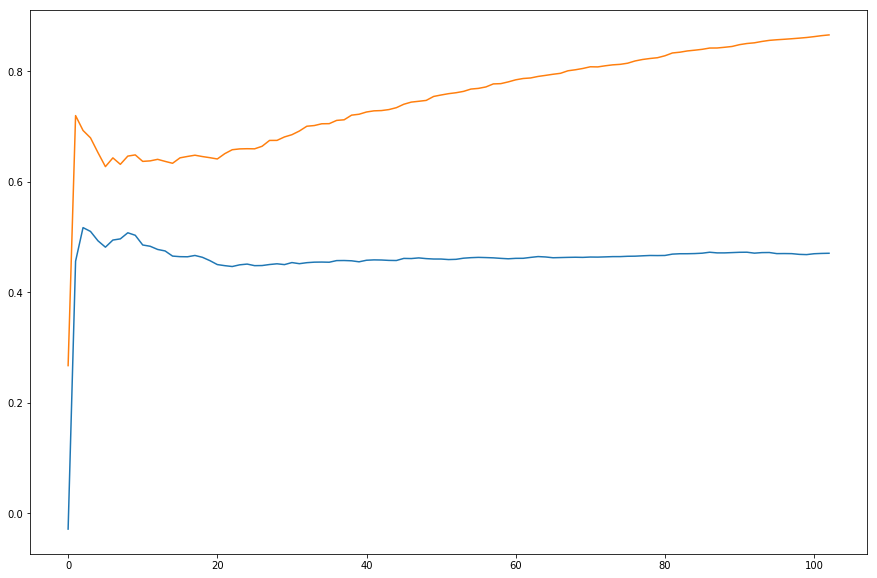

- [1]: This kernel is a baseline with lightLGB, the main focus was on train/validation split (using 0.8 separation) and on metric function (compute sortino), the learning rate is pretty weird tough, it spikes up to 0.51 and then it goes down and then learn gradually, not that much. Uses early stopping so the model is picking 0.51.  [TODO] why volume is not in features?
- [2]: Same kernel as [1], differnece that didn't use early stopping. Dosn't sound super good, difference of 0.51 - 0.47 in validation results in a difference of 0.629 - 0.626 in leaderboard. Need to change hyperparameters and check if substantial differnece how is influenced
- [3]: Same kernel as [1], changed depthb of tree. improvement of 0.01 in validation doesn't have correlation with leatherboard. Conclusionwith the current validation method changes in validation smaller then 0.05 are not relevant: '
- [4]: This time I deleted asset related feature like asset_mean_open, that initial spike reduced. Interesting to reflect on this from feature engineerng point of vire. This time change in validation change also on public leadearboard! Great news: Changes bigger then 0.1 in validation set are relevant!! We can use this validation method to do feature engineering As a referebce for later the training for this model (Without asset specific features) is as follows:

- [5]: Not really clear what happened here. I just changed super hyper parameters cause I noticed volume features had importance 0.0 in previous model. Now volume is ok, stopping at third iteration. Validation decreased, Public test increased.

- [6]: standardized model APIs, from now on all models follow API and submissino standards. This is a basic linear regressor.
- [7]: standardize LGBM, added a lot of feature but score unexpecedly low. This uses regression with l1 reg
- [8]: standardize LGBM, added a lot of feature but score unexpecedly low. This uses binary classification (so predict in [0,1])
- [9]: now that we have a standard protocol I can start exploring. I tried to fork and submit eda 67 and turns out that score is super low. Reading the comments turns out is because of validation. If you put cross validation it is said to get 0.69 (!?) how is it possible? I tried to submit kernel with cross validation and see results.
- [10]: strange result, got a 0.1 increase in leatherboard (0.67) thanks to changing cross validation from split to random, need to check different distribution of prediction between the twos
- [11]: first STANDARD MODEL submission working properly, the model is written from scratch by me using split validation, [36] short-term lagged features on returns + weekday, regression l1 and params1 from eda 67. Training looks pretty healthy, stopped at 13th iteration. Most important feats: lag_14_openRaw10_max, volume, and lag_14_openRaw10_min.
- [12]:identical model as above, just changed test train validation split. Some strange things happened. (1) Score same as before (didnt change likein 10) (2) trained for over 210 periods and didnt meet early stopping, will attach train later. Is this overfitting?
- [13]:this should be a replica of eda 067 but it gets only 063, not clear why. The training is with binary logloss and goes on for more then 100 epocs and looks pretty healthy, tried with clipping or not clipping score doesnt change.